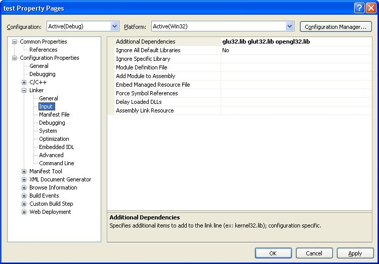

These instructions explain how to create and run GLUT applications in the computer labs using Visual C++ 2005/2008/2010. Some instructions for installing and using the GLUT and OpenGL libraries for personal computers or computers without the proper files installed can be found here.
When creating an OpenGL\GLUT application, no OS code is required since everything is, conveniently enough, handled by the GLUT libraries. When using Visual C++ 2005, the best way to start is with a bare-bones Win32 Console Application. Selecting File > New will allow you to create a simple Win32 Console Application Project.
Give the project a name and location and select the default settings from then on. You'll be faced with a empty Visual Studio 2005 project.
If Visual Studio does not give you a prepared C++ source file you can create one and add it to your project. When creating your source and header files, make sure to include the <GL/glut.h> header file. In order to avoid conflicts between header files, you should make <GL/glut.h> or <glut.h> the last header file you include - if it's listed before others, it sometimes will give an error about function redefinition. This header includes all other necessary headers required to use OpenGL in Windows.
The following steps may not be necessary in the computer labs, but if you run into problems, you should follow them. The only thing necessary to compile a GLUT application is to link to the necessary libraries. These are OPENGL32.LIB, GLU32.LIB, and GLUT32.LIB. Select Project > "ProjectName" Properties and move to the Linker folder. You can enter the necessary files into the Additional Dependencies textbox.
